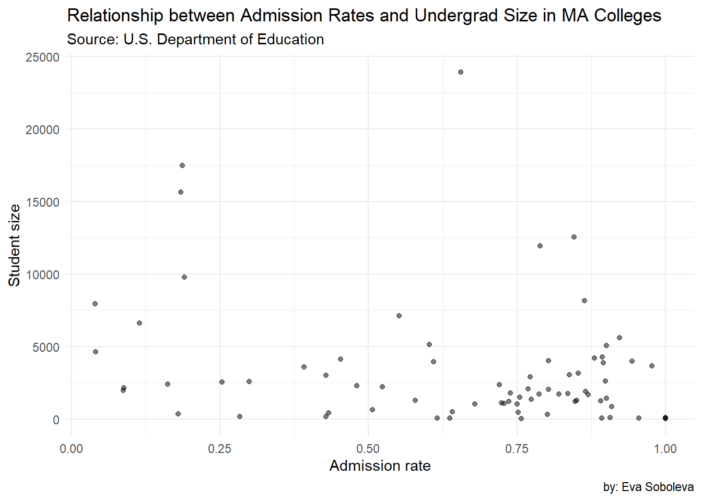
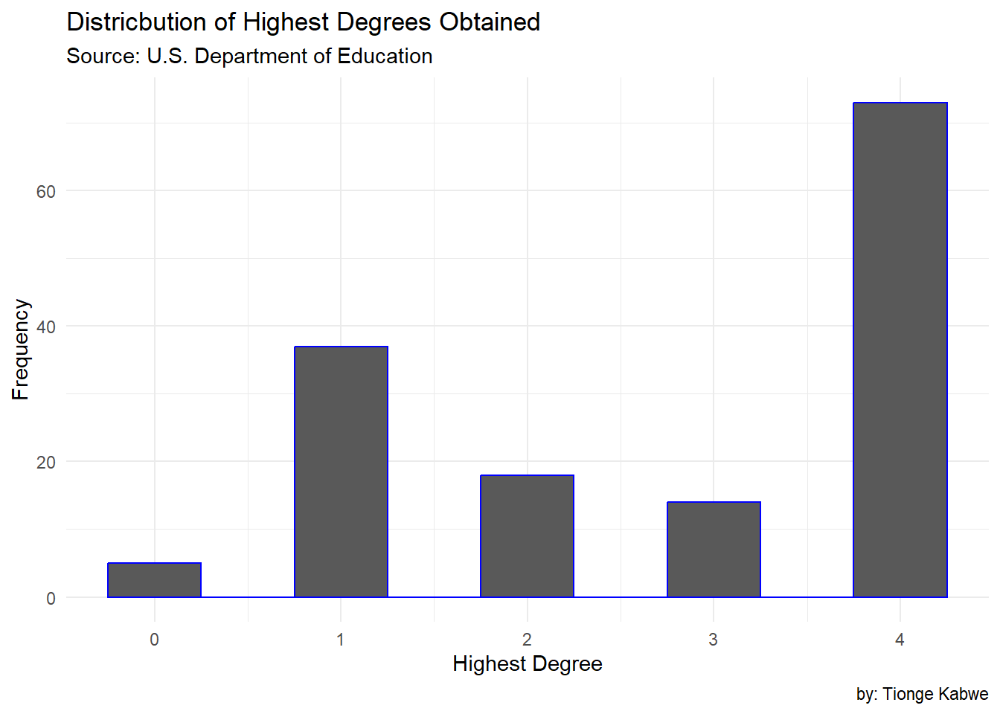
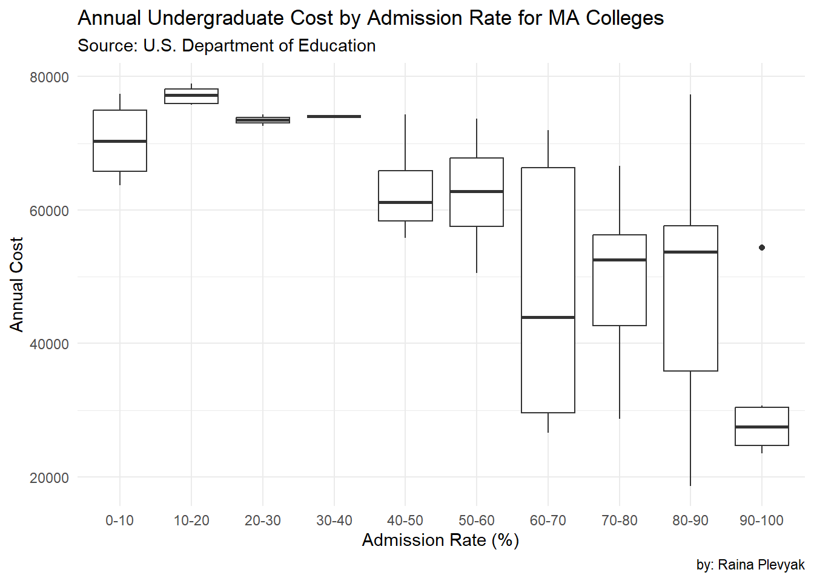

scorecard <-sc_init() |>sc_year(2021) |>#Note how we are looking at only 2021 data here!sc_filter(stabbr =="MA") |>#Note how we are looking at only Massachusetts data here!#The line below shows variable selection (there are lots of variables)sc_select(unitid, instnm, city, highdeg, control, ugds, adm_rate, costt4_a, costt4_p, pcip27, pctfloan, admcon7, wdraw_orig_yr2_rt, cdr3) |>sc_get()
Large request will require: 1 additional pulls.
Request additional chunk 1
Request complete!
# Here's an example of how to recode the control variable# We are renaming the column control_text from controlscorecard$control_text <-#The recode function does the work. It calls 1 "Public", 2 " Private nonprofit",etc. recode( scorecard$control, "1"="Public", "2"="Private nonprofit", "3"="Private for-profit",.default =NA_character_ )
Plot 1: What is the relationship between class size and admission rate in MA colleges?
# Create plot 1 here: scatter plot # admission rate#undergrad sizeggplot(data = scorecard,aes(x = adm_rate,y = ugds)) +geom_point(alpha =0.5) +labs(title="Relationship between Admission Rates and Undergrad Size in MA Colleges",subtitle ="Source: U.S. Department of Education",caption="by: Eva Soboleva",x ="Admission rate",y ="Student size") +theme_minimal()
Warning: Removed 73 rows containing missing values or values outside the scale range
(`geom_point()`).

Plot 2: What is the distribution of highest degrees among MA colleges?
# Create plot 2 here: histogram#highest degreeggplot(data = scorecard, aes(x = highdeg)) +geom_histogram(binwidth =0.5, color ="blue") +labs(title ="Districbution of Highest Degrees Obtained",subtitle ="Source: U.S. Department of Education",caption="by: Tionge Kabwe",x ="Highest Degree", y ="Frequency") +theme_minimal()

Plot 3: What is the relationship between annual cost and admission rate?
# Create plot 3 here: box plot # admission rate# annual cost bin_size <-0.1 scorecard |>drop_na(adm_rate, costt4_a) |>mutate(bin_adm =factor( adm_rate%/%bin_size*10) ) |>ggplot(aes(x = bin_adm,y = costt4_a) ) +geom_boxplot()+labs(title ="Annual Undergraduate Cost by Admission Rate for MA Colleges",subtitle ="Source: U.S. Department of Education",caption="by: Raina Plevyak",x ="Admission Rate (%)", y ="Annual Cost") +scale_x_discrete(labels=c("0-10", "10-20", "20-30", "30-40", "40-50", "50-60", "60-70", "70-80", "80-90", "90-100")) +theme_minimal()

# Referenced this post for boxplot binning logistics/syntax:#user248237r. (2013, October 8). binning geom_boxplot in ggplot2 in R?. Stack Overflow. https://stackoverflow.com/questions/19247435/binning-geom-boxplot-in-ggplot2-in-r
Blog post
The data was gotten from institution-level files filled from 1996-97 through 2022-23 containing data for each institution. The data Includes information on institutional characteristics, enrollment, student aid, costs, and student outcomes. One plot will show annual cost distribution among schools grouped by admission rate. The data used in this plot compares cost ranges (a sum of tuition, fees, books, supplies, and living expenses for full-time, first-time, degree-seeking undergraduates receiving Title IV aid) and admission rates (the quotient of the number of admitted undergraduates and the number of submitted undergraduate applications). Schools were grouped by admission rate into categories ranging 10%. The second plot will show the relationship between admission rates and undergraduate enrollment size for colleges in Massachusetts. By plotting these variables, I want to understand whether there is a pattern linking the selectivity of a college to its student population. In the box plot, we can see that median annual costs for lower admission rates tend to be higher. Therefore, more “elite” schools are more expensive for undergraduate students. Similarly, schools with 100% admission rates have the lowest median cost and the lowest range of prices. Therefore, less “elite” schools are more affordable. In the scatter plot I saw an inverse relationship between admission rates and undergraduate size. As the Admission rates decreased the undergraduate enrollment size increased. For example, my plot showed that institutions with highly selective admissions (below 20% acceptance rate) often have larger student bodies, suggesting that universities with higher admission rates maintain high enrollment numbers despite their competitive admissions. In the histogram, I noticed that the highest degree obtained with a value of 4 had a frequency above 60. This was followed by one degree with a frequency of exactly 40. The values 0, 2, and 3, as measures of the highest degrees obtained, all had frequencies below 20. This suggests that 4 had the greatest frequency, displaying a non-linear relationship between the highest degree obtained and its frequency. Based on the scatterplot, the dataset assumes that admission rates, graduation rates, and student enrollment sizes are important indicators of an institution’s quality and desirability. It also overlooks alternative success measures such as student satisfaction or post-graduation hire rates. Based on the histogram, the assumption from the data set was that most of the observations had obtained the 4th level degree, so creating this visualization helped to see the frequency of the other levels. Based on some research online, the College Scorecard dataset is produced by the DOE, specifically through the National Center for Education Statistics (NCES) and the Federal Student Aid (FSA) office. These government ORGS determine which data points to collect, how to standardize them, and how to present them. This data set excludes non traditional colleges as well as community colleges. As shown in the box plot, the median annual price of MA schools generally decreases as admission rates increase. This plot excludes 30 schools that did not disclose admission or cost statistics, so there is a gap in the trends conveyed. The dataset includes a diverse set of schools, but does not convey much about their respective student bodies. As utilized in the scatter plot, this data helped visually show the relationship between admission rates and undergrad enrollment. In the future this data set can be used to provide researchers analysis on whether or not more selective institutions disproportionately attract larger student bodies. Some harms include the fact that this scatterplot may reinforce the idea that lower admission rates= better colleges which may not always be true because it ignores the fact that these same colleges usually have the worst mental health etc. The histogram helped us visually analyze the frequency of different levels of educational attainment within a sample of 150 observations. This type of visualization was helpful in identifying the most and the least common degree levels, providing an overview of the educational background of the observed group. The visualization also provided a recognition or trend in educational attainment which can be significant for social, economic, or demographic analysis.